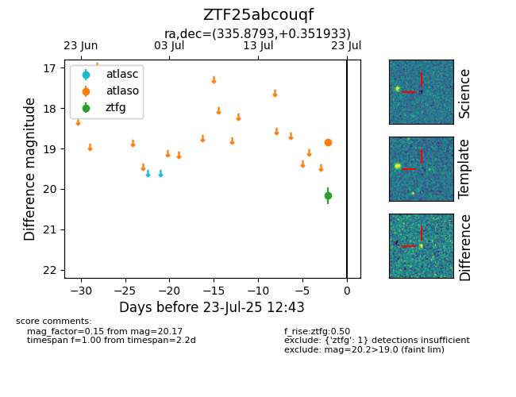

Target ZTF25abcouqf at 2025-07-23 12:43, see:
FINK: fink-portal.org/ZTF25abcouqf
Lasair: lasair-ztf.lsst.ac.uk/objects/ZTF25abcouqf
ALeRCE: alerce.online/object/ZTF25abcouqf
alt names
ZTF25abcouqf (ztf,fink)
coordinates:
equatorial (ra, dec) = (335.8793,+0.35193)
galactic (l, b) = (64.5083,-45.08437)
photometry
last atlaso=18.84, ztfg=20.17
1 atlaso, 1 ztfg detections
